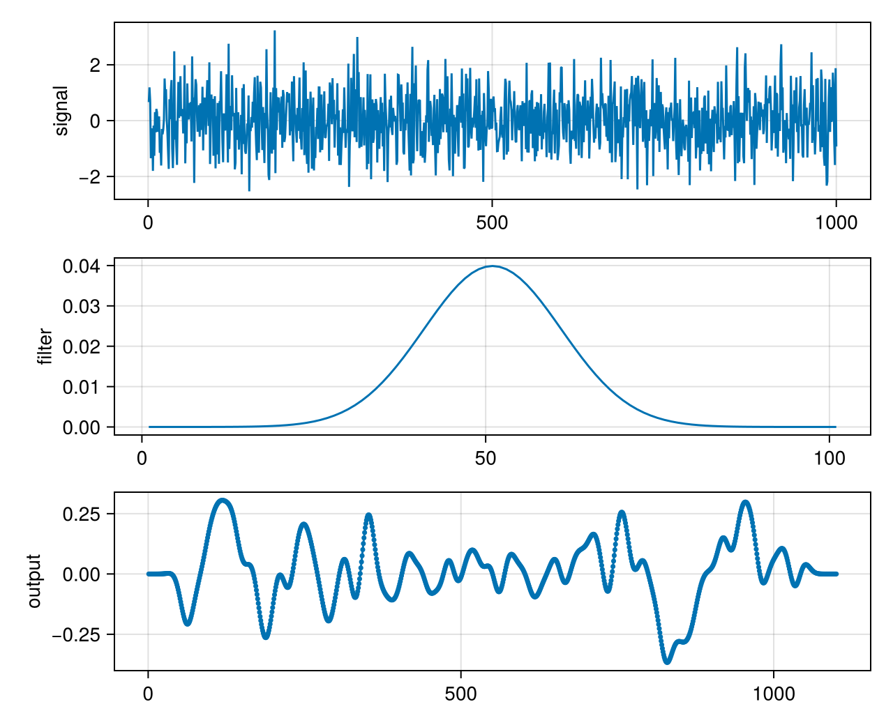

Fast convolution
A filter that slides over a signal costs $O(nm)$ operations for signal length $n$ and filter length $m$. Through the convolution theorem, the convolution is a pointwise product of spectra: transform both, multiply, transform back. That costs $O(N \log N)$ with $N ≥ n + m - 1$. The result is linear, not circular, so both inputs are zero-padded first.
using FFTL, CairoMakie, Random
Random.seed!(3)
signal = randn(1000)
kernel = [exp(-(k - 50)^2 / 200) for k in 0:100] # a smooth 101-tap filter
kernel ./= sum(kernel);Direct sum, for reference
function direct_convolution(x, h)
y = zeros(length(x) + length(h) - 1)
for i in eachindex(x), j in eachindex(h)
y[i + j - 1] += x[i] * h[j]
end
y
enddirect_convolution (generic function with 1 method)Through the FFT
The padded length is a power of two here. FFTL plans any length, so any $N ≥ n + m - 1$ works; powers of two are simply a convenient choice.
n = length(signal) + length(kernel) - 1
N = nextpow(2, n)
xpad = zeros(N); xpad[1:length(signal)] .= signal;
hpad = zeros(N); hpad[1:length(kernel)] .= kernel;The inputs are real, so rfft and irfft do this with half the work of complex transforms:
y_fft = irfft(rfft(xpad) .* rfft(hpad), N)[1:n]
y_dir = direct_convolution(signal, kernel)
maximum(abs, y_fft - y_dir)3.3306690738754696e-16The difference is at the level of rounding.
The signal, the filter and the output; the FFT points sit on the direct curve:
fig = Figure(size = (640, 520))
ax1 = Axis(fig[1, 1]; ylabel = "signal")
lines!(ax1, signal)
ax2 = Axis(fig[2, 1]; ylabel = "filter")
lines!(ax2, kernel)
ax3 = Axis(fig[3, 1]; ylabel = "output")
lines!(ax3, y_dir)
scatter!(ax3, y_fft; markersize = 5)
fig
Filtering a long signal
For a signal much longer than the filter, one transform of the whole padded signal wastes memory, and a stream has no end to pad to. Overlap-add cuts the signal into blocks of length $B$, convolves each block with the filter through transforms of length $N = B + m - 1$, and adds the overlapping tails. The plans for length $N$ and the filter's spectrum are made once and reused for every block (see Plans and reuse).
long_signal = randn(20_000)
B = 1024 - length(kernel) + 1 # N = 1024
N = B + length(kernel) - 1
pf = plan_rfft(zeros(N))
pb = plan_irfft(zeros(ComplexF64, N ÷ 2 + 1), N)
H = pf * [kernel; zeros(N - length(kernel))]
y_ola = zeros(length(long_signal) + length(kernel) - 1)
block = zeros(N)
for s in 1:B:length(long_signal)
e = min(s + B - 1, length(long_signal))
block .= 0
block[1:e-s+1] .= @view long_signal[s:e]
part = pb * ((pf * block) .* H)
m = min(N, length(y_ola) - s + 1)
y_ola[s:s+m-1] .+= @view part[1:m]
end
maximum(abs, y_ola - direct_convolution(long_signal, kernel))5.551115123125783e-16This page was generated using Literate.jl.